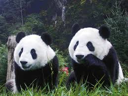
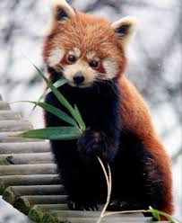

Order: Carnivora Family: Ursidae Genus and species: Ailuropoda melanoleuca
Giant pandas are black and white bears that live in temperate-zone bamboo forests in central China. Among the bsest recognized—but rarest—animals in the world, they have come to symbolize endangered species and conservation efforts. As few as 1,600 giant pandas survive in the mountain forests of central China. More than 300 pandas live in zoos and breeding centers around the world; most of these pandas are in China.
About the size of an American black bear, giant pandas stand between two and three feet tall at the shoulder (on all four legs), and reach four to six feet long. Males are larger than females, weighing up to 250 pounds in the wild. Females rarely reach 220 pounds.

The panda, also known as the giant panda to distinguish it from the unrelated red panda, is a bear native to south central China.
Red Panda
Order: Carnivora Family: Ailuridae
Genus and Species: Ailurus fulgens
Red pandas, which resemble raccoons, are about 42 inches long, including a long, bushy tail. They weigh between seven and 14 pounds. Their red-and-white markings blend in with the red mosses and white lichens that grow on the trees in which they live. Their soft, dense fur covers their entire body—even the soles of their feet. Red pandas use their long, bushy tails to balance when they're in trees. They also cover themselves with their tails in winter.
Red pandas live in the cool temperate bamboo forests in Sichuan, Yunnan, and Xizang provinces in China, in the foothills of the Himalayas in Nepal and Bhutan, and in northern Myanmar. They share part of their range with giant pandas.

The red panda is also called lesser panda and red cat-bear